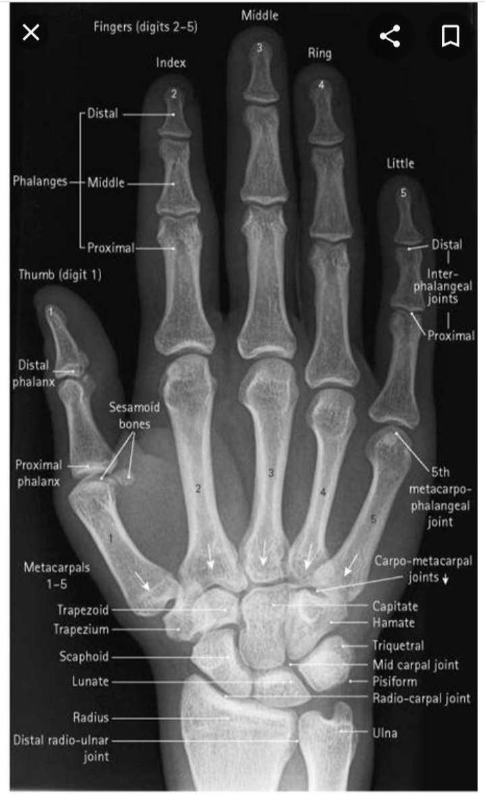

<!DOCTYPE html>
<html>

<head>
    <title>homepage</title>
    <meta charset="utf-8">
    <meta name="viewpoint" content="width=device-width intial-scale=1.0">
    <meta name="keywords" content="HTML, CSS">
    <meta name="description" content="Basic radiographic postioning of the hand for an X-ray examination">
    <link rel="stylesheet" href="stylesheet.css">
    <style>
        body {
            font-family: Arial, Helvetica, sans-serif;
            background-image: url("images/jean.jpg");
            background-repeat: no-repeat;
            background-size: cover;
        }


        .imgcontainer {
            text-align: center;
            margin: auto;
        }

        img.avatar {
            width: 50%;
            height: 50%;
            float: center;


        }

        .videocontainer {
            text-align: center;
            margin: 24px 12px;
        }


        figcaption {
            background-color: bisque;
            color: black;
            font-style: italic;
            float: center;
        }

        h2 {
            text-align: center;
            font-weight: bold;
            color: red;
        }


        h4 {
            color: black;
            text-align: left;
        }
    </style>
</head>

<body>
    <div class="topnav">
        <a class="active" href="#home">Home</a>
        <a href="#news">News </a>
        <a href="#about">About</a>
        <a href="login.html">Log out</a>
    </div>

    <figure>
        
        <figcaption>Fig.1 - X-ray image of the right hand with labelling</figcaption>
    </figure>

    <h2>Basic projections</h2>
    <hr style="color:red;">
    <p>Two projections are routinely taken, a dorsi-palmar (DP) and an anterior oblique (DP oblique). Each image is
        acquired using a CR image receptor or alternatively within the field of view
        of a DDR detector. An 18 cm × 24 cm size cassette is used for CR imaging.</p><br>

    <h2>Dorsi-palmar</h2>
    <hr style="color:red;">
    <h4>Position of patient and image receptor</h4>
    <p>The patient is seated alongside the table with the affected arm
        nearest to the table</p>

    <p>
        The forearm is pronated and placed on the table with the palmer surface of the hand in contact with the image
        receptor.
        The fingers are separated and extended but relaxed to ensure that they remain in contact with the image
        receptor.
        The wrist is adjusted so that the radial and ulna styloid processes are equidistant from the image receptor.
        A sandbag is placed over the lower forearm for immobilisation.
    </p>

    <h4>Direction and location of X-ray beam</h4>
    <p>
        The collimated vertical beam is centred over the head of the 3rd metacarpal.
    </p>

    <h4>Essential image characteristics </h4>
    <p>
        The image should demonstrate all the phalanges, including the soft tissue of the fingertips, the carpal an
        metacarpal bones and the distal end of the radius and ulna.
        The interphalangeal and metacarpo-phalangeal and carpometacarpal joints should be demonstrated clearly.
        No rotation of the hand.
    </p>
    <div class="video container">
        <figure>
            <video width="520" height="420" muted controls>
                <source src="videos/Positioning_of_the_Hand_.mp4" type="video/mp4">
            </video>
            <figcaption>A short video explaning the radiographic procedure</figcaption>
        </figure>
    </div>
    <audio control>

    </audio>

</body>

</html>